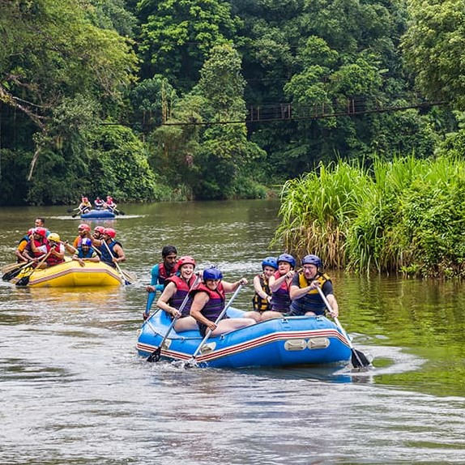
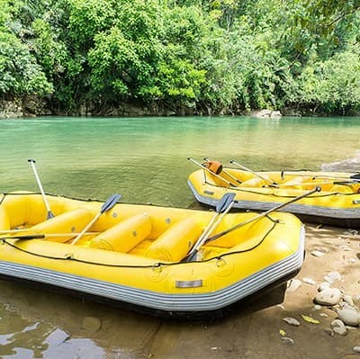

"Rafting down the rivers of Nahuel Huapi invites you to explore vast forests through its exciting, action-packed rapids. During the summer, the flow increases, forming holes and waves that produce high-intensity rapids. Excursions are carried out on inflatable rafts that typically have a capacity for 10 people. They are accompanied by a professional guide who provides necessary instructions to enjoy a safe and fulfilling navigation experience."

Bariloche Rafting
History
Bariloche Rafting was founded 20 years ago by two brothers who were passionate about adventure and the nature of Patagonia. Since then, we have become the leading rafting company in the region, offering a wide variety of exciting experiences for all levels and ages. In addition to rafting, we also offer other outdoor activities such as kayaking, hiking, and fly fishing,
all with the same attention to detail and focus on safety that characterizes our rafting excursions. Our goal is to provide our customers with a unique and memorable experience in the midst of the stunning natural beauty of Patagonia. Join us on one of our thrilling adventures and discover why Bariloche Rafting is the preferred choice of nature and extreme sports enthusiasts.
Adventure Awaits You
Manso River

Peuma River

Manso River Inferior
Futaleufu River
Manso RIver